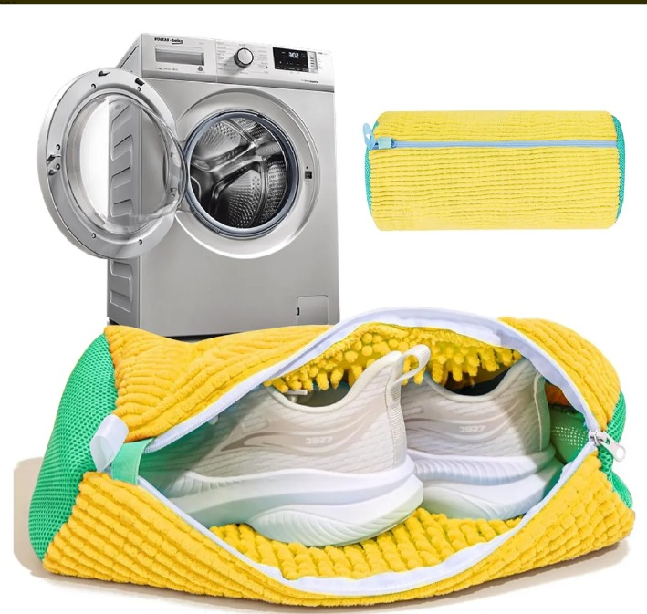

¿Por qué lavar tenis en la lavadora arruina tus zapatos?
⚠️
Se deforman y pierden forma
El golpeteo contra el tambor daña la estructura irremediablemente.
🔨
Suelas que se despegan
El impacto constante separa la suela del cuerpo del zapato.
💥
Daños a tu lavadora
Los cordones y elementos duros pueden dañar el interior.
🦠
Limpieza incompleta
Las plantillas quedan húmedas y con mal olor por falta de ventilación.
Método tradicional

Riesgo alto de daños permanentes
VS
Con nuestra bolsa

Protección total y limpieza profunda